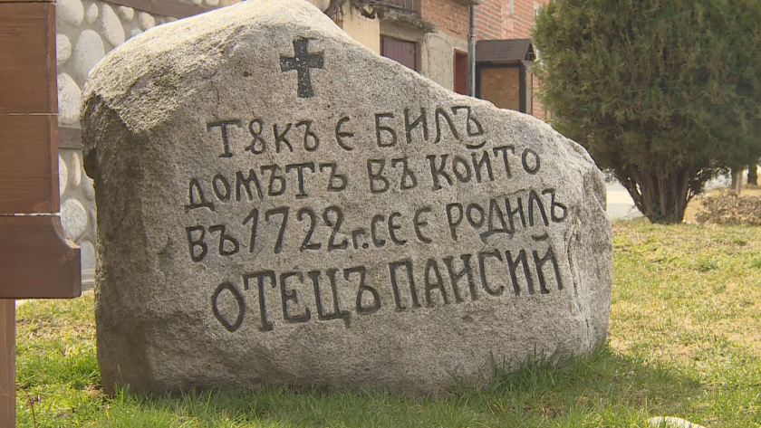

Монахът, който се е превърнал в знаме на българското Възраждане с едно от най-великите дела в историята
ни – създаването на писана българска история, чиято цел е да събуди искрата на патриотизма на народа ни,
да му вдъхне самочувствие, припомняйки му славното минало, извоювано достойно от предците ни.
Информация за живота на Паисий имаме от автобиографичните му бележки в „История славянобългарска“,
вписванията в хилендарските кондики и някои писма. Роден е през 1722 година (казва се, че завършва
„История славянобългарска“ 40-годишен) в Самоковската епархия със светско име Пенко или Петър. За
родното си място самият той пише в „История славянобългарска“: „и пришедъша ва Светьiе гори Афонские у
епархiи Самоковскiие въ лъто 1745“ („дошъл в Света гора Атонска от Самоковска епархия в 1745 година“).
През 1761 г. Паисий посещава Сремски Карловци (Австрия), където също търси
исторически сведения. Запознава се с руския превод на трудовете на Цезар Бароний „Деяния церковная и
гражданская” и на дубровнишкия абат Мавро Орбини – „Книга историография”, от които взема образци и
черпи сведения. След завръщането си на Света гора се премества в Зографския манастир, където и
завършва „История славянобългарска” през 1762 г.

„История славянобългарска” е уникален труд на Паисий, който го нарежда сред
най-великите българи. Въпреки скромността на автора, че не е изучавал „нито граматика, нито
политика”, хилендарският монах като самоук-историограф е достигнал върховете на националните
прозрения, създавайки един исторически труд с ясен усет към рационално и целенасочено ползване на
многостранните извори, за да изгради една грандиозна картина на историческото минало на българите,
от която те да се гордеят, а не да се срамуват.
В „История славянобългарска” Паисий подчертава важното и водещото в миналото на българите: „Първо те
са имали царе и патриарси, първо те са се кръстили, най-много земя те завладели.”